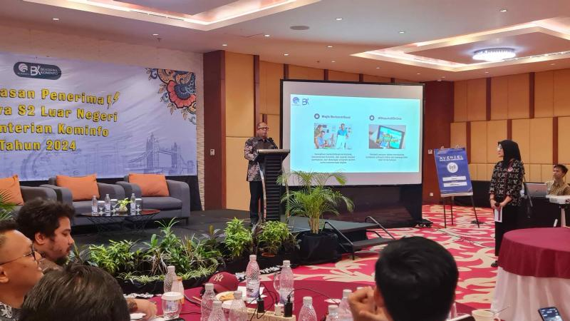

Peluncuran Resmi ESign Balikpapan
1 September 2025
Pemerintah Kota Balikpapan secara resmi meluncurkan layanan ESign Balikpapan pada 1 September 2025. Layanan ini hadir sebagai solusi tanda tangan elektronik yang sah secara hukum, sekaligus mendukung percepatan transformasi digital di lingkungan pemerintahan maupun masyarakat.
Acara peluncuran berlangsung di Aula Pemerintah Kota Balikpapan dengan dihadiri oleh Wali Kota Balikpapan, jajaran pejabat daerah, perwakilan Kementerian Komunikasi dan Informatika, serta sejumlah tokoh masyarakat.
Dalam sambutannya, Wali Kota Balikpapan menyampaikan bahwa layanan ESign menjadi bagian penting dari upaya mewujudkan Smart City:
“Dengan ESign, proses tanda tangan dokumen tidak lagi terhambat jarak dan waktu. Semua bisa dilakukan secara digital, cepat, aman, dan efisien. Ini adalah langkah nyata menuju birokrasi yang lebih modern dan transparan.”
Melalui ESign, masyarakat maupun aparatur pemerintah dapat menandatangani berbagai dokumen, mulai dari surat perizinan, kontrak kerja, hingga surat dinas, tanpa harus bertemu langsung atau mencetak dokumen fisik.
Selain mempercepat proses administrasi, penggunaan ESign juga diharapkan dapat mengurangi penggunaan kertas dan mendukung program ramah lingkungan (paperless office) di Balikpapan.
Ke depannya, ESign Balikpapan akan terus dikembangkan agar dapat terintegrasi dengan seluruh sistem pelayanan publik. Dengan begitu, layanan masyarakat bisa lebih efisien, cepat, dan terpercaya.